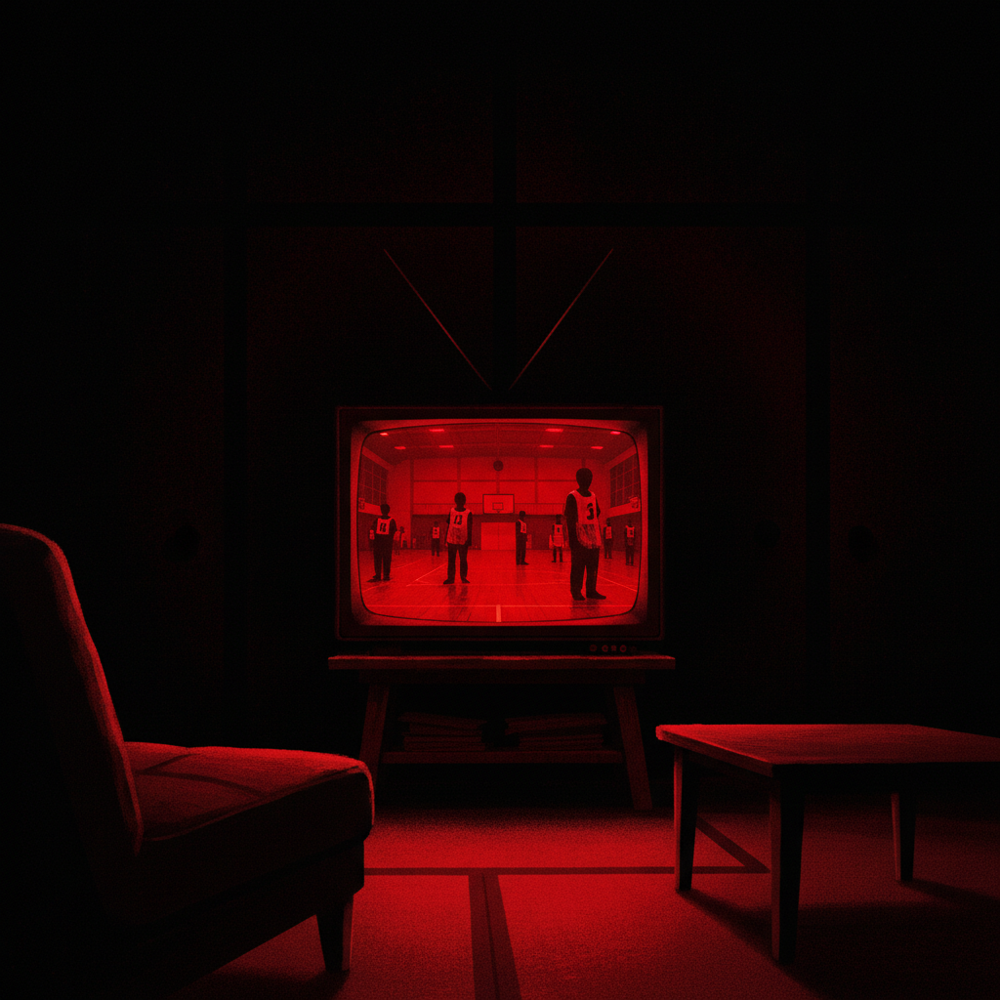
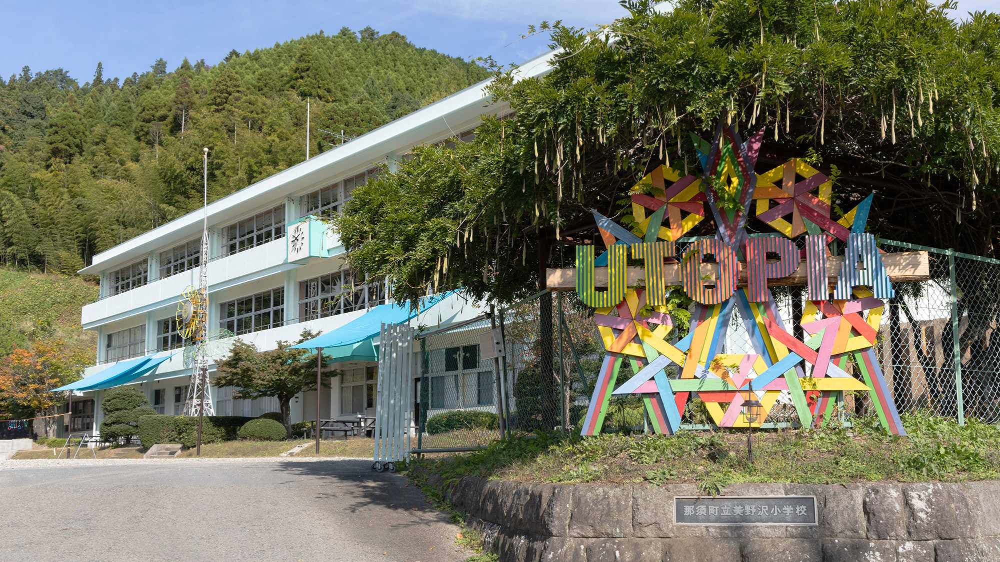
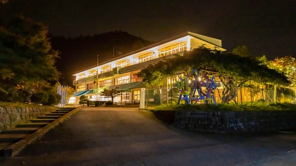
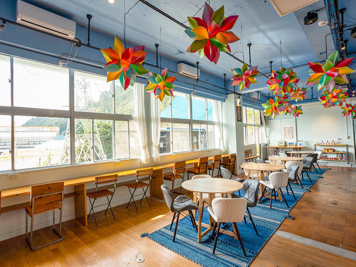
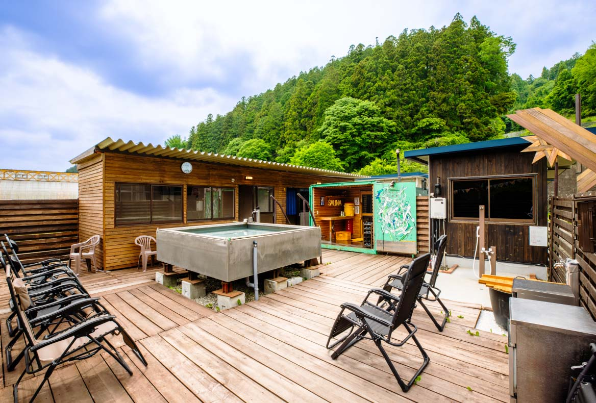

IMMERSIVE LAB × NASU UTOPIA
廃校で目覚める、1泊2日のデスゲーム。
どちらの DEATH CLASS で目覚めたい？
あなたの一票で、開校が決まる。
ドラマや映画で観た"あのデスゲーム"を、実際に体験する1泊2日の宿泊型企画。
見たかったのは 「自分の能力で勝ち抜く緊張感」 ですか？
それとも 「物語の登場人物として生きる没入」 ですか？
私たちは2つの DEATH CLASS を用意しました。5月末までの投票で多かった案を開校します。ただし、どちらも100名以上に届かなければ、開催は見送りです。

A案 / 赤
最後までこの教室に生き残れるのは誰だ。
IMMERSIVE LAB × NASU UTOPIA
/ サバイバルゲーム
ドラマで観てきた"あのデスゲーム"を、自分の能力で勝ち抜く。
知力・体力・心理戦の全競技を1泊2日でくぐり抜け、最後に教室に立っているのはたった一人。
プレイヤー本人。あなたの知力・体力・判断力。
競技 / 突破 / 勝敗 / 達成
勝ち残れ。
A案 サバイバルゲームに投票 ▶VS
B案 / 青
あなたは、誰を助けますか。
ドラマで観てきた"あの世界"の登場人物として、2日間を生きる。
役柄・関係性・秘密。観客ではなく主役の一人として、誰を助け、誰を裏切るかを選ぶ物語没入体験。
あなたが演じるキャラクター。事前に渡される名前・背景・隠し情報。
役 / 選択 / 関係性 / 物語
IMMERSIVE LAB × NASU UTOPIA
/ 物語没入体験
演じきれ。
B案 物語没入体験に投票 ▶| 軸 | A案 サバイバルゲーム ／ 赤 | B案 物語没入体験 ／ 青 |
|---|---|---|
| 主役 | プレイヤー本人 | 演じるキャラクター |
| 価値 | 競技 / 勝敗 / 突破 | 物語 / 選択 / 関係 |
| 終わり方 | 勝者一人 | 分岐エンディング複数 |
投票期間：〜 2026年5月31日
決定条件：投票が多かった案を開校。ただし、両案とも100名以上の票が集まることが条件です。
条件未達の場合は、今回の開校は見送りとなります。
※ 集計はリアルタイム更新（最大30秒のラグ）
CAMPAIGN — INVITATION
結果発表の先行案内 + 抽選で無料招待。
特典 1 / 投票者全員へ
投票者全員に、先行案内。
A案・B案、どちらに投票してくださった方にも、2026年6月4日 19:00 に先行案内をメールでお届けします。一般販売（2026年6月8日 19:00）前に、最速で勝者の席を取れます。
特典 2 / 抽選で無料招待
票が伸びるほど、招待枠も増える。
TIER 1
500票
1組 2名 招待
TIER 2
1,000票
3組 6名 招待
TIER 3
1,500票
5組 10名 招待
上記の票数は、勝者陣営に投票された数のみカウントします。
勝者陣営に投票された方の中から、抽選で当選者を決定します。
当選人数は、勝者陣営の最終票数に応じて確定します。
当選者には、2026年6月2日 19:00 までにメールでご連絡します。

© NASU UTOPIA / 公式サイトより
那須ユートピア（NASU UTOPIA）
旧美野沢小学校をリノベーションした体験型施設
〒329-3437 栃木県那須町簔沢563-4
お車
・東北自動車道「那須IC」より約35分
・東北自動車道「那須高原SAスマートIC」より約25分
新幹線
・東北新幹線「那須塩原駅」より車で約30分
在来線・バス
・JR宇都宮線「黒磯駅」より車で約25分
・JR「黒磯駅」よりバス（追分・黒磯線）約47分
廃校となった旧美野沢小学校をリノベーションし、教室ルーム・グランピングヴィラ・コンクリートサウナ「CUBERU」・ハンドメイドサウナ「Rekka」・地産地消BBQ・ナイトミュージアム等を備える、宿泊型の総合体験施設。
DEATH CLASS は、この"本物の廃校"の空間そのものを舞台に開校します。


